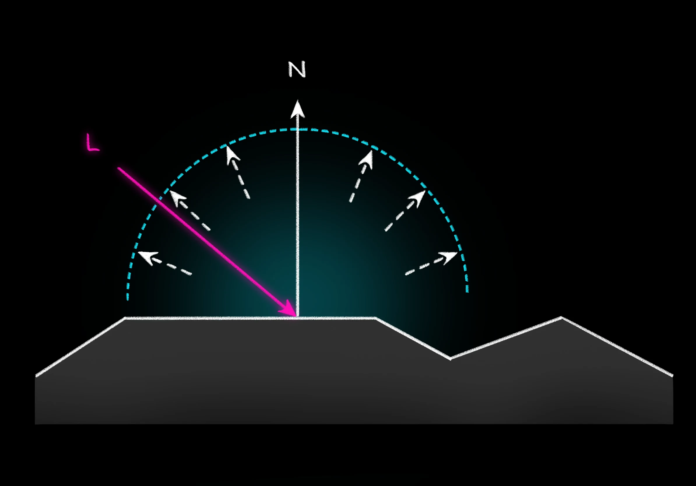
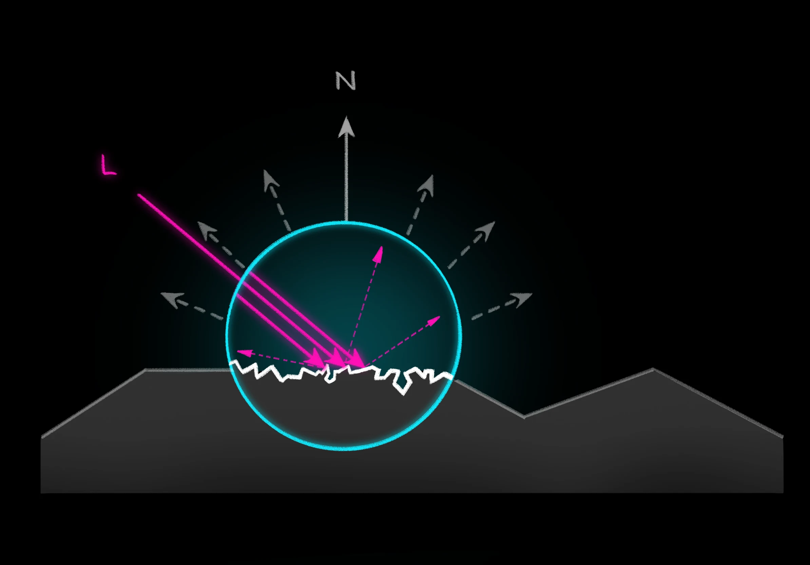
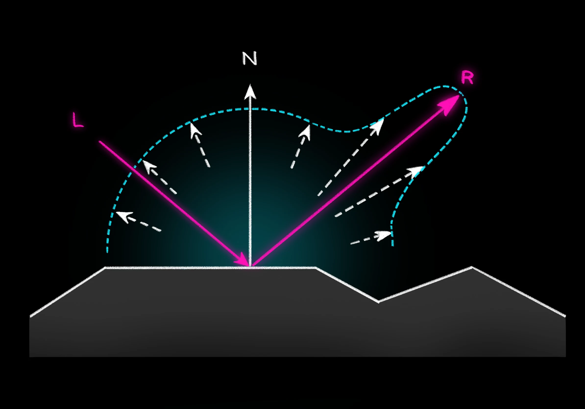

In dieser Einheit wird gezeigt, wie virtuelle Kameras in der Theorie und in der praktischen Umsetzung funktionieren und wie effizient 3D Szenen aus wohldefinierten Blickwinkeln dargestellt werden können.
Ziel dieser Einheit soll es sein, zu verstehen, welche Rolle Beleuchtung in der Computergrafik spielt und wie simple lokale Beleuchtungsverfahren funktionieren. Bevor wir uns jedoch genauer mit der Umsetzung beschäftigen, müssen wir uns zunächst erarbeiten, welche Eigenschaften virtuelle Beleuchtung auszeichnen.
Wir wollen uns dafür ein paar Aufnahmen aus verschiedenen Spielen ansehen. Welche Eigenschaften, die ein Beleuchtungsmodell charakterisieren, kannst du daraus ableiten?
|
|---|
| 🧩 Beispielscreenshots |
Wie auch auf den Screenshots zu erkennen, ist Beleuchtung ein zentrales Ausdrucksmittel und für 3D-Wahrnehmung wichtig. Sie vermittelt Betrachter*innen Informationen über Oberflächenbeschaffenheit und Form von Objekten und trägt dadurch signifikant dazu bei, einen räumlichen Eindruck zu erzeugen.
Um diese Informationen zu vermitteln, muss die Belechtung der Szene also in irgendeiner Form von der Oberfläche abhängen, also insbesondere ihrer Ausrichtung sowie ihrem Material und Struktur. So würde z.B. ein Ball aus Gummi bei gleicher Beleuchtung anders aussehen als eine Kugel aus Metall.
Dabei sind verschiedene Beleuchtungseffekte zu beobachten: Zum einen sind Flächen stärker erleuchtet, je mehr sie dem Licht zugewandt sind, unabhängig von der Kameraposition. Dieser Bestandteil der Beleuchtung nennt sich diffuse Beleuchtung. Zum anderen sind auch Glanzpunkte zu erkennen, deren Position sich in Abhängigkeit von der Blickrichtung verändert. Diese highlights sind der spekulare Anteil der Beleuchtung.
In der Computergrafik I möchten wir zunächst darauf eingehen, wie diese beiden Effekte umgesetzt werden können, um grundlegend plausible Beleuchtung zu erzeugen, die von Oberflächenausrichtung und -material abhängig ist. Natürlich gehört für eine realistische Beleuchtung aber noch einiges mehr dazu. Weiterführende Effekte, die in den Screenshots zu erkennen sind, sind z.B. indirekte Beleuchtung und Schattenwurf.
Direkte vs. Indirekte Beleuchtung
Direkte Beleuchtung bezeichnet alle Beleuchtungseffekte, die nur Licht berücksichtigen, das auf direktem Wege auf die Oberfläche trifft. U.a. werden Reflexion oder Refraktion von Licht durch andere Objekte zwischen der Oberfläche und der Lichtquelle nicht berücksichtigt. Wird beispielsweise eine weiße Wand angestrahlt, würde mit einer physikalisch korrekten Darstellung ein Teil des reflektierten Lichts andere Objekte der Szene erleuchten. Dieser Effekt kann durch Beleuchtungsmodelle mit rein direkter Beleuchtung nicht abgebildet werden.
 |
|---|
| 🧩 Cornell-Box direct vs indirect: Platzhalter |
Schattierung vs. Schattenwurf
Während es bei der Schattierung darum geht, die Oberflächenfarbe gemäß Material und Ausrichtung gegenüber Lichtquelle und Kamera anzupassen, meint Schattenwurf das Entstehen von Schatten durch Hindernisse zwischen Oberfläche und Lichtquelle.
 |
|---|
| 🧩 Shading/Shadowing |
Aber was macht diese Effekte so viel schwieriger umzusetzen als direkte Beleuchtung ohne Schattenwurf? Das liegt daran, welche Informationen jeweils benötigt werden, um das Ergebnis zu berechnen. Für direkte Beleuchtung ohne Schatten reicht es aus, die Oberflächennormale und die Positionen von Lichtquellen, Kamera und dem aktuellen Punkt auf der Oberfläche zu kennen. Für indirekte Beleuchtung und Schattenwurf hingegen wird Information über alle Objekte der Szene benötigt, die sich in irgendeiner Weise auf die Beleuchtung der aktuellen Oberfläche auswirken könnten. Zwischen all diesen Objekten kann das Licht zudem potenziell beliebig oft hin und her reflektiert werden, was die Beleuchtungsberechnung deutlich komplexer und rechenintensiver macht.
Es gibt natürlich viele clevere Ansätze, um auch mit weniger Rechenkapazität einige Aspekte komplexerer Beleuchtung umzusetzen. Einige davon, insbesondere Techniken zum Annähern von Schatten, werden in Computergrafik II thematisiert.
Zusammenfassung:
Für eine detailliertere Einführung in die physikalischen Grundlagen des Lichts empfehlen wir die Seite von Bartosz Ciechanowski <insert link>. Für diese Einheit werden wir jedoch ein einfaches Strahlenmodell annehmen.
Wir nehmen die Welt um uns darüber wahr, wie Licht mit ihr interagiert. Wir können Objekte nur sehen, wenn sie mit Licht in Kontakt kommen und dieses entweder in Richtung Betrachter*in zurückwerfen (Reflexion), durchlassen (Transmission) oder verschlucken (Absorption). Diese Erscheinungen nehmen Einfluss darauf wie hell oder dunkel ein Objekt wahrgenommen wird und bewirken dadurch Schattierung und Schattenwurf. Damit bilden sie auch die Grundlage für unser Beleuchtungsmodell.
 |
|---|
| Strahlentypen |
Weitere Phänomene, die bei der Interaktion von Licht mit Objekten einer Szene auftreten können, sind z.B. Lichtbeugung und -brechung sowie Interferenzerscheinungen, diese spielen jedoch in den Lichtausbreitungsmodellen der Computergrafik in der Regel eine untergeordnete Rolle. Den Hauptfaktor bildet die Reflexion.
Wie bereits erwähnt unterscheiden wir zwischen diffuser und spekularer Reflexion, die zusammen unser (sehr simples) Beleuchtungsmodell bilden. Welche physikalischen Grundlagen bzw. welche Modellannahmen stecken dahinter?
Als diffuse Reflexion wird der Effekt bezeichnet, dass Flächen heller wirken, je mehr sie dem Licht zugewandt sind. Sie ist vollständig unabhängig vom Betrachtungswinkel und nur von Oberflächenausrichtung und Lichtposition bzw. Lichtrichtung abhängig.
Es steht die Modellannahme dahinter, dass das auf die Oberfläche auftreffende Licht gleichmäßig in alle Richtungen reflektiert wird. Dieses Phänomen ist stärker, je rauer die Oberfläche ist.
|  |
|---|
| Diffuse Reflexion - modelliertes Verhalten |
Physikalisch lässt sich dieses Phänomen damit begründen, dass raue Flächen viele kleine Unebenheiten beinhalten. Treffen dicht nebeneinanderliegende Lichtstrahlen (erklären, dass auch wenig Licht aus mehreren Strahlen besteht) auf die Fläche, werden sie in praktisch zufällige Richtungen reflektiert. Durch dieses Verhalten der einzelnen Lichtstrahlen wird das Licht insgesamt annähernd gleichmäßig in alle verschiedenen Richtungen reflektiert.
|  |
|---|
| Reflexion an Unebenheiten in der Oberfläche |
Wie viel Licht genau in Abhängigkeit vom Lichteinfallswinkel reflektiert wird, lässt sich mithilfe des Lambertschen Gesetzes bestimmen. Dieses besagt, dass die reflektierte Lichtmenge proportional zum Kosinus des Winkels zwischen der Einfallsrichtung des Lichtes und der Flächennormale ist.
|  |
|---|
| Spekulare Reflexion |
why Reflexion is so important (wahrscheinlich kein extra abschnitt)
(neuer Abschnitt) Diffus + spekular in more detail aka GIVE ME FORMELN
= how do we berechen this?